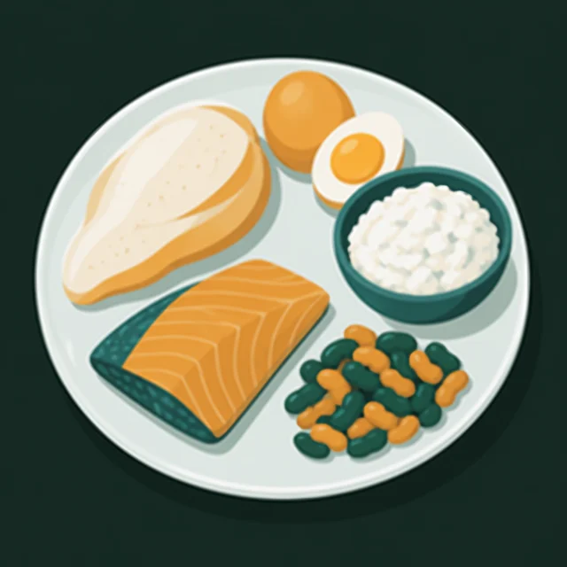

01 · строитель
Белок
- Что это
- Строительный материал для мышц, кожи, волос, ферментов и иммунных клеток.
- Зачем
- После силовой тренировки мышцы восстанавливаются и растут из белка. Ещё он дольше держит сытость.
- Где взять
- Курица, индейка, рыба, яйца, творог, йогурт, сыр, бобовые, тофу.
- Ориентир
- Порция белка в каждом основном приёме пищи — примерно с вашу ладонь. Для тех, кто тренируется с отягощениями: в среднем увеличение белка сверх примерно 1,6 г на кг веса в день не давало заметного дополнительного прироста мышечной массы1.

 Когда очень хочется есть
Когда очень хочется есть